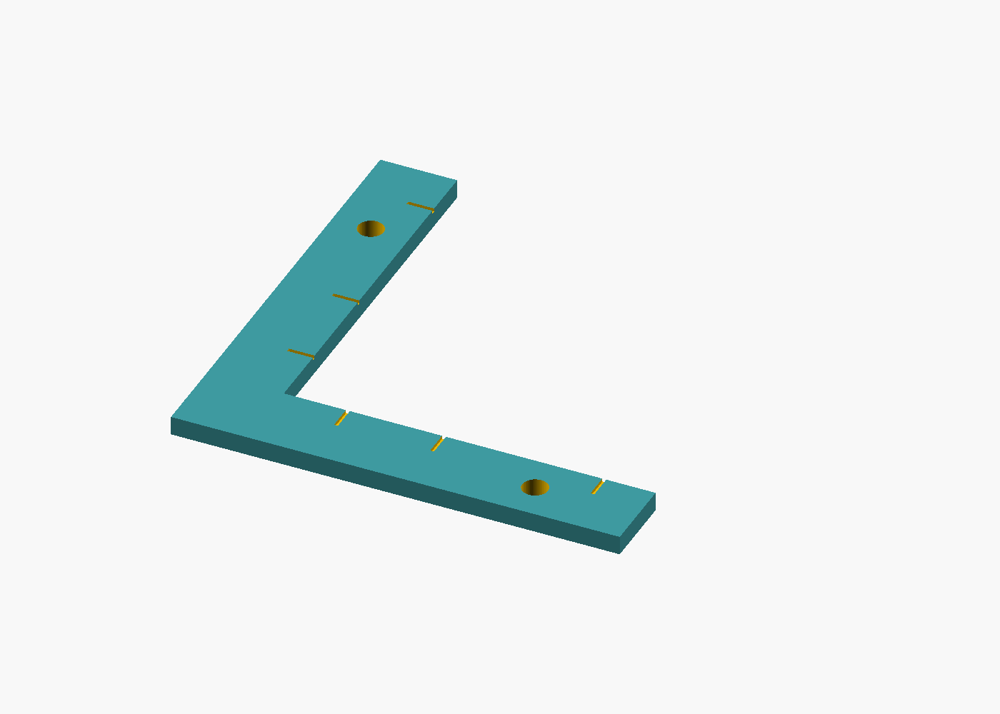
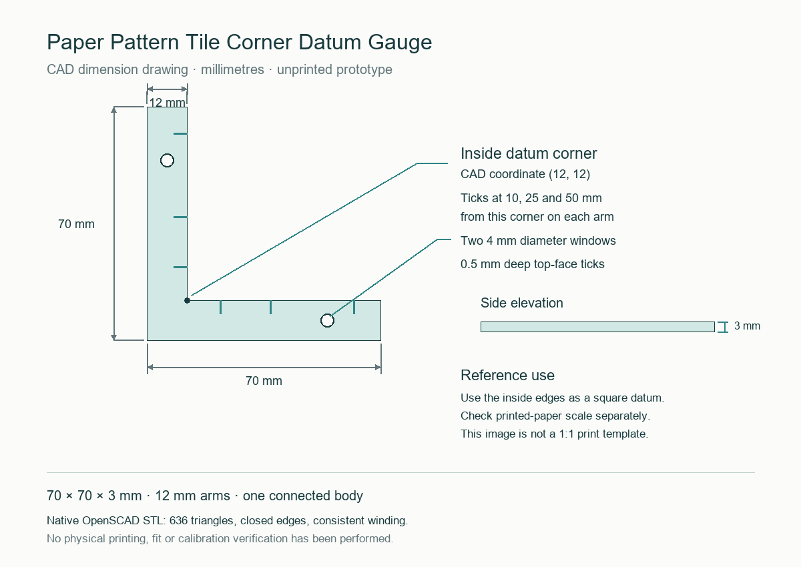

Sewlore · editable maker reference
Paper Pattern Tile Corner Datum Gauge
An original L-shaped datum for checking the square trimmed corner of a tiled paper pattern. The files describe a 70 × 70 × 3 mm CAD prototype. It has not been physically printed or calibrated.


Use the inside corner as the datum
- Check the printed pattern's test square with an independent ruler. Correct the print scale before trimming or assembling tiles.
- Place the trimmed tile on a flat support. Bring its corner against the gauge's two inside edges to use them as a square reference.
- Check both trimmed edges against the datum. This reference does not replace the pattern's registration marks or repair distorted printing.
CAD dimensions, not physical measurements
| Feature | CAD specification |
|---|---|
| Overall bounds | 70 × 70 × 3 mm |
| Arm width | 12 mm |
| Inside corner | (12, 12) mm |
| Top-face ticks | 10, 25 and 50 mm along each arm from the inside corner; 0.5 mm deep |
| View windows | Two 4 mm diameter through-holes |

Import and adapt deliberately
STL has no encoded length unit. Import it as millimetres and check that the slicer reports 70 × 70 × 3 mm. The source exposes leg length, width, thickness, windows and tick offsets. Rebuild with OpenSCAD and check changed geometry before using an adaptation.
What was verified
The exact native STL has 636 triangles, closed edges, consistent winding, one connected body, no degenerate triangles and two through-hole tunnels. Its CAD bounds were checked independently. These are file and geometry checks; they do not establish physical print quality, dimensional tolerance, material behaviour or paper-alignment performance.
Reuse and attribution
Editable source uses MIT; the original CAD outputs and guide use CC BY 4.0. Credit Sewlore, link to the applicable licence and indicate changes.